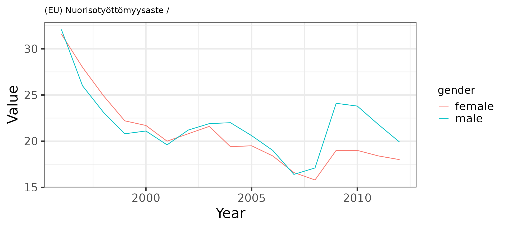
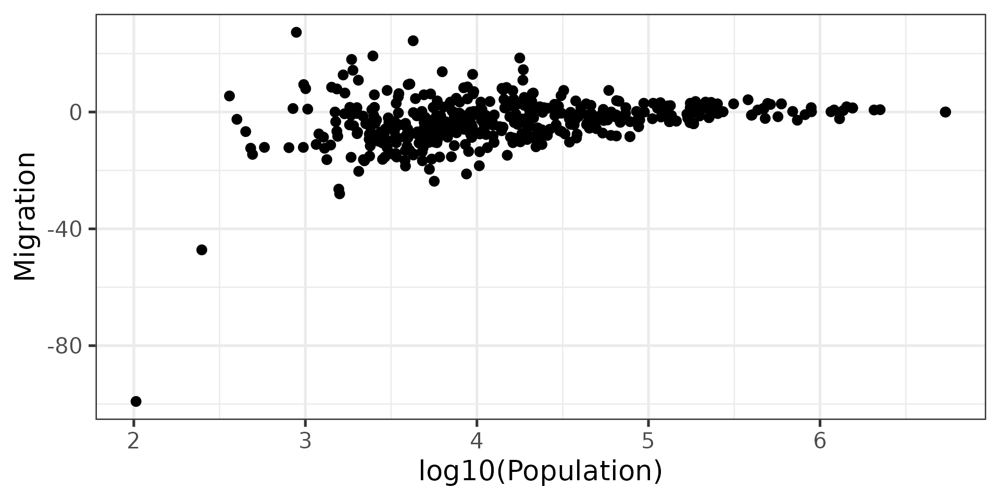

This is the sotkanet R package to access data from the Sotkanet portal that provides over 2000 demographic indicators across Finland and Europe, maintained by the National Institute for Health and Welfare (THL). For more information, see Information about Sotkanet and API description. This package is part of rOpenGov.
Installation
Release version from CRAN:
install.packages("sotkanet")Development version from GitHub:
library(devtools)
install_github("ropengov/sotkanet")Usage
Listing available indicators
Load sotkanet and other libraries used in this vignette
List available Sotkanet indicators:
# Using a pre-defined list of indicators for a smaller download
sotkanet.indicators <- SotkanetIndicators(id = c(4,5,6,7,46,74), type = "table")
kable(head(sotkanet.indicators))| indicator | indicator.title.fi | indicator.organization | indicator.organization.title.fi |
|---|---|---|---|
| 4 | Mielenterveyden häiriöihin sairaalahoitoa saaneet 0 - 17-vuotiaat / 1 000 vastaavanikäistä | 2 | Terveyden ja hyvinvoinnin laitos (THL) |
| 5 | Toimeentulotukea saaneet 25 - 64-vuotiaat, % vastaavanikäisestä väestöstä | 2 | Terveyden ja hyvinvoinnin laitos (THL) |
| 6 | Somaattisen erikoissairaanhoidon vuodeosastohoitopäivät 75 vuotta täyttäneillä / 1 000 vastaavanikäistä | 2 | Terveyden ja hyvinvoinnin laitos (THL) |
| 7 | 0 - 6-vuotiaat, % väestöstä | 3 | Tilastokeskus |
| 46 | 0 - 6-vuotiaat, % väestöstä, väestöennuste 2060 | 3 | Tilastokeskus |
| 74 | Yhden vanhemman perheet, % lapsiperheistä | 3 | Tilastokeskus |
List geographical regions with available indicators:
# options(width = 60)
sotkanet.regions <- SotkanetRegions(type = "table")
kable(head(sotkanet.regions))| region | region.title.fi | region.code | region.category | region.uri |
|---|---|---|---|---|
| 833 | Etelä-Suomen AVIn alue | 1 | ALUEHALLINTOVIRASTO | http://www.yso.fi/onto/kunnat/ahv1 |
| 834 | Lounais-Suomen AVIn alue | 2 | ALUEHALLINTOVIRASTO | http://www.yso.fi/onto/kunnat/ahv2 |
| 835 | Itä-Suomen AVIn alue | 3 | ALUEHALLINTOVIRASTO | http://www.yso.fi/onto/kunnat/ahv3 |
| 836 | Länsi- ja Sisä-Suomen AVIn alue | 4 | ALUEHALLINTOVIRASTO | http://www.yso.fi/onto/kunnat/ahv4 |
| 837 | Pohjois-Suomen AVIn alue | 5 | ALUEHALLINTOVIRASTO | http://www.yso.fi/onto/kunnat/ahv5 |
| 838 | Lapin AVIn alue | 6 | ALUEHALLINTOVIRASTO | http://www.yso.fi/onto/kunnat/ahv6 |
Querying SOTKAnet indicators
Get the indicator no. 10013 (Unemployment rate of young people aged 16-24 years) from Sotkanet, from Finland (Suomi) for 1990-2012 (Eurostat employment statistics youth unemployment), and plot a graph:
# Get indicator data
dat <- GetDataSotkanet(indicators = 10013, years = 1990:2012,
genders = c('female', 'male', 'total'),
region.category = "EUROOPPA", regions = "Suomi")
# Investigate the first lines in the data
kable(head(dat)) %>%
kable_styling() %>%
kableExtra::scroll_box(width = "100%")| indicator | region | year | gender | primary.value | absolute.value | indicator.title.fi | region.title.fi | region.code | region.category | indicator.organization.title.fi | |
|---|---|---|---|---|---|---|---|---|---|---|---|
| 10013.22 | 10013 | 1022 | 1999 | female | 22.2 | NA | (EU) Nuorisotyöttömyysaste | Suomi | 246 | EUROOPPA | Euroopan yhteisöjen tilastotoimisto (Eurostat) |
| 10013.31 | 10013 | 1022 | 2006 | male | 19.0 | NA | (EU) Nuorisotyöttömyysaste | Suomi | 246 | EUROOPPA | Euroopan yhteisöjen tilastotoimisto (Eurostat) |
| 10013.66 | 10013 | 1022 | 1999 | male | 20.8 | NA | (EU) Nuorisotyöttömyysaste | Suomi | 246 | EUROOPPA | Euroopan yhteisöjen tilastotoimisto (Eurostat) |
| 10013.119 | 10013 | 1022 | 2006 | female | 18.4 | NA | (EU) Nuorisotyöttömyysaste | Suomi | 246 | EUROOPPA | Euroopan yhteisöjen tilastotoimisto (Eurostat) |
| 10013.142 | 10013 | 1022 | 2002 | male | 21.2 | NA | (EU) Nuorisotyöttömyysaste | Suomi | 246 | EUROOPPA | Euroopan yhteisöjen tilastotoimisto (Eurostat) |
| 10013.158 | 10013 | 1022 | 2004 | male | 22.0 | NA | (EU) Nuorisotyöttömyysaste | Suomi | 246 | EUROOPPA | Euroopan yhteisöjen tilastotoimisto (Eurostat) |
Visualization
Download and visualize time series:
# Pick indicator name
indicator.name <- as.character(unique(dat$indicator.title.fi))
indicator.source <- as.character(unique(dat$indicator.organization.title.fi))
# Visualize
library(ggplot2)
theme_set(theme_bw(20));
p <- ggplot(dat, aes(x = year, y = primary.value, group = gender, color = gender))
p <- p + geom_line() + ggtitle(paste(indicator.name, indicator.source, sep = " / "))
p <- p + labs(x = "Year", y = "Value", caption = "Data source: https://sotkanet.fi")
p <- p + theme(title = element_text(size = 10))
p <- p + theme(axis.title.x = element_text(size = 20))
p <- p + theme(axis.title.y = element_text(size = 20))
p <- p + theme(legend.title = element_text(size = 15))
print(p)
Investigate the effect of municipality size on demographic variation. Smaller municipalities show more random variation as expected by statistical arguments:
selected.inds <- c(127, 178)
dat <- GetDataSotkanet(indicators = selected.inds,
years = 2011, genders = c('total'))
# Pick necessary fields and remove duplicates
datf <- dat[, c("region.title.fi", "indicator.title.fi", "primary.value")]
datf <- datf[!duplicated(datf),]
dw <- reshape(datf, idvar = "region.title.fi",
timevar = "indicator.title.fi", direction = "wide")
names(dw) <- c("Municipality", "Population", "Migration")
p <- ggplot(dw, aes(x = log10(Population), y = Migration)) +
geom_point(size = 3)
ggtitle("Migration vs. population size")
#> $title
#> [1] "Migration vs. population size"
#>
#> attr(,"class")
#> [1] "labels"
theme(title = element_text(size = 15))
#> List of 1
#> $ title:List of 11
#> ..$ family : NULL
#> ..$ face : NULL
#> ..$ colour : NULL
#> ..$ size : num 15
#> ..$ hjust : NULL
#> ..$ vjust : NULL
#> ..$ angle : NULL
#> ..$ lineheight : NULL
#> ..$ margin : NULL
#> ..$ debug : NULL
#> ..$ inherit.blank: logi FALSE
#> ..- attr(*, "class")= chr [1:2] "element_text" "element"
#> - attr(*, "class")= chr [1:2] "theme" "gg"
#> - attr(*, "complete")= logi FALSE
#> - attr(*, "validate")= logi TRUE
theme(axis.title.x = element_text(size = 20))
#> List of 1
#> $ axis.title.x:List of 11
#> ..$ family : NULL
#> ..$ face : NULL
#> ..$ colour : NULL
#> ..$ size : num 20
#> ..$ hjust : NULL
#> ..$ vjust : NULL
#> ..$ angle : NULL
#> ..$ lineheight : NULL
#> ..$ margin : NULL
#> ..$ debug : NULL
#> ..$ inherit.blank: logi FALSE
#> ..- attr(*, "class")= chr [1:2] "element_text" "element"
#> - attr(*, "class")= chr [1:2] "theme" "gg"
#> - attr(*, "complete")= logi FALSE
#> - attr(*, "validate")= logi TRUE
theme(axis.title.y = element_text(size = 20))
#> List of 1
#> $ axis.title.y:List of 11
#> ..$ family : NULL
#> ..$ face : NULL
#> ..$ colour : NULL
#> ..$ size : num 20
#> ..$ hjust : NULL
#> ..$ vjust : NULL
#> ..$ angle : NULL
#> ..$ lineheight : NULL
#> ..$ margin : NULL
#> ..$ debug : NULL
#> ..$ inherit.blank: logi FALSE
#> ..- attr(*, "class")= chr [1:2] "element_text" "element"
#> - attr(*, "class")= chr [1:2] "theme" "gg"
#> - attr(*, "complete")= logi FALSE
#> - attr(*, "validate")= logi TRUE
theme(legend.title = element_text(size = 15))
#> List of 1
#> $ legend.title:List of 11
#> ..$ family : NULL
#> ..$ face : NULL
#> ..$ colour : NULL
#> ..$ size : num 15
#> ..$ hjust : NULL
#> ..$ vjust : NULL
#> ..$ angle : NULL
#> ..$ lineheight : NULL
#> ..$ margin : NULL
#> ..$ debug : NULL
#> ..$ inherit.blank: logi FALSE
#> ..- attr(*, "class")= chr [1:2] "element_text" "element"
#> - attr(*, "class")= chr [1:2] "theme" "gg"
#> - attr(*, "complete")= logi FALSE
#> - attr(*, "validate")= logi TRUE
print(p)
Fetch all SOTKAnet indicators
This takes for a long time and is not recommended for regular use. Save the data on your local disk for further work.
# These indicators have problems with R routines:
problematic.indicators <- c(1575, 1743, 1826, 1861, 1882, 1924, 1952, 2000,
2001, 2033, 2050, 3386, 3443)
# Get data for all indicators
datlist <- list()
for (ind in setdiff(sotkanet.indicators$indicator, problematic.indicators)) {
datlist[[as.character(ind)]] <- GetDataSotkanet(indicators = ind,
years = 1990:2013, genders = c('female', 'male', 'total'))
}
# Combine tables (this may require considerable time and memory
# for the full data set)
dat <- do.call("rbind", datlist)Further examples
For further usage examples, see rOpenGov-blog, and takomo, and Helsinki Region Infoshare-blog
Licensing and Citations
SOTKAnet data
Cite SOTKAnet and link to https://sotkanet.fi/sotkanet/fi/index. Also mention indicator provider.
Central points:
- SOTKAnet REST API is meant for non-regular data queries. Avoid regular and repeated downloads.
- SOTKAnet API can be used as the basis for other systems
- Metadata for regions and indicators are under CC-BY 4.0
- THL indicators are under CC-BY 4.0
- Indicators provided by third parties can be used only by separate agreement!
SOTKAnet R package
This work can be freely used, modified and distributed under the Two-clause BSD license.
citation("sotkanet")
#>
#> Kindly cite the sotkanet R package as follows:
#>
#> Leo Lahti, Einari Happonen, Juuso Parkkinen, Joona Lehtomaki, Vesa
#> Saaristo and Pyry Kantanen (rOpenGov 2022). sotkanet: Sotkanet Open
#> Data Access and Analysis. R package version 0.9.79
#> https://github.com/rOpenGov/sotkanet
#>
#> A BibTeX entry for LaTeX users is
#>
#> @Misc{,
#> title = {sotkanet: Sotkanet Open Data Access and Analysis},
#> author = {Leo Lahti and Einari Happonen and Joona Lehtomäki and Juuso Parkkinen and Joona Lehtomaki and Vesa Saaristo and Pyry Kantanen},
#> url = {https://github.com/rOpenGov/sotkanet},
#> year = {2022},
#> note = {R package version 0.9.79},
#> }
#>
#> Many thanks for all contributors!Session info
This vignette was created with
sessionInfo()
#> R version 4.1.2 (2021-11-01)
#> Platform: x86_64-pc-linux-gnu (64-bit)
#> Running under: Ubuntu 20.04.3 LTS
#>
#> Matrix products: default
#> BLAS: /usr/lib/x86_64-linux-gnu/blas/libblas.so.3.9.0
#> LAPACK: /usr/lib/x86_64-linux-gnu/lapack/liblapack.so.3.9.0
#>
#> locale:
#> [1] LC_CTYPE=C.UTF-8 LC_NUMERIC=C LC_TIME=C.UTF-8
#> [4] LC_COLLATE=C.UTF-8 LC_MONETARY=C.UTF-8 LC_MESSAGES=C.UTF-8
#> [7] LC_PAPER=C.UTF-8 LC_NAME=C LC_ADDRESS=C
#> [10] LC_TELEPHONE=C LC_MEASUREMENT=C.UTF-8 LC_IDENTIFICATION=C
#>
#> attached base packages:
#> [1] stats graphics grDevices utils datasets methods base
#>
#> other attached packages:
#> [1] ggplot2_3.3.5 kableExtra_1.3.4 magrittr_2.0.2 knitr_1.37
#> [5] sotkanet_0.9.79
#>
#> loaded via a namespace (and not attached):
#> [1] xfun_0.29 bslib_0.3.1 purrr_0.3.4 colorspace_2.0-2
#> [5] vctrs_0.3.8 htmltools_0.5.2 viridisLite_0.4.0 yaml_2.2.2
#> [9] utf8_1.2.2 rlang_1.0.0 pkgdown_2.0.2 jquerylib_0.1.4
#> [13] pillar_1.7.0 glue_1.6.1 withr_2.4.3 lifecycle_1.0.1
#> [17] stringr_1.4.0 munsell_0.5.0 gtable_0.3.0 ragg_1.2.1
#> [21] rvest_1.0.2 memoise_2.0.1 evaluate_0.14 labeling_0.4.2
#> [25] fastmap_1.1.0 curl_4.3.2 fansi_1.0.2 highr_0.9
#> [29] scales_1.1.1 cachem_1.0.6 desc_1.4.0 webshot_0.5.2
#> [33] jsonlite_1.7.3 farver_2.1.0 systemfonts_1.0.3 fs_1.5.2
#> [37] textshaping_0.3.6 digest_0.6.29 stringi_1.7.6 rprojroot_2.0.2
#> [41] grid_4.1.2 cli_3.1.1 tools_4.1.2 sass_0.4.0
#> [45] tibble_3.1.6 crayon_1.4.2 pkgconfig_2.0.3 ellipsis_0.3.2
#> [49] xml2_1.3.3 rmarkdown_2.11 svglite_2.0.0 httr_1.4.2
#> [53] rstudioapi_0.13 R6_2.5.1 compiler_4.1.2